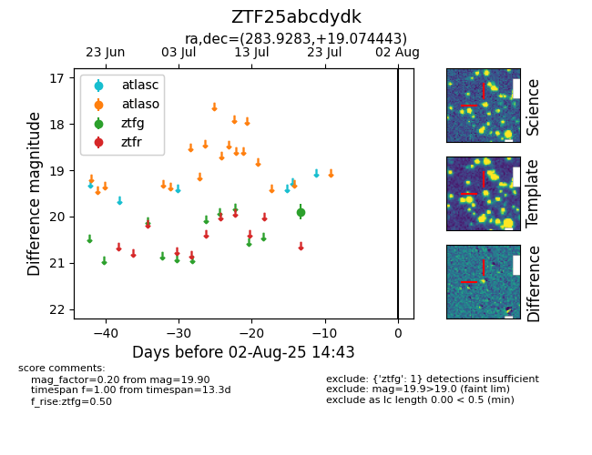

Target ZTF25abcdydk at 2025-08-02 14:43, see:
FINK: fink-portal.org/ZTF25abcdydk
Lasair: lasair-ztf.lsst.ac.uk/objects/ZTF25abcdydk
ALeRCE: alerce.online/object/ZTF25abcdydk
alt names
ZTF25abcdydk (ztf,fink)
coordinates:
equatorial (ra, dec) = (283.9283,+19.07444)
galactic (l, b) = (50.4842,+7.66170)
photometry
last ztfg=19.90
1 ztfg detections
